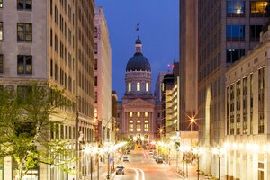
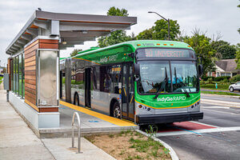
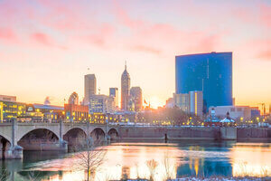
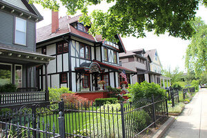
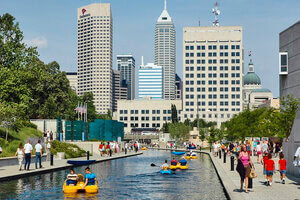
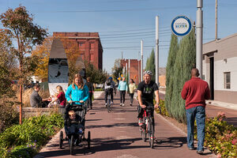
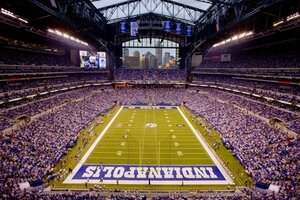
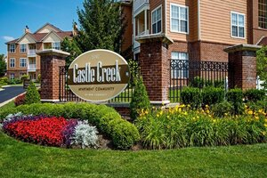

The Indianapolis Basics
Indianapolis and History
About Indianapolis
Indianapolis, city, seat (1822) of Marion county and capital of Indiana, U.S. It lies on the White River at its confluence with Fall Creek, near the centre of the state. The city is built on a level plain surrounded by low, gently sloping hills. It is a planned municipality, its layout resembling that of Washington, D.C., with radiating streets that converge on Monument Circle at the city centre. The climate is typical of the east-central Midwest, with warm to hot summers and cold winters; precipitation is moderate and spread fairly evenly throughout the year.
About History
Indianapolis was founded in 1821 as the state capital, which it officially became in 1825. Some impetus for growth was given when the Cumberland (National) Road (modern Washington Street downtown) was routed across the city in 1827 and later when railroads arrived. Indianapolis had become a major rail centre by the start of the American Civil War in 1861, and its importance to Union logistics spurred further growth; its population more than doubled between 1860 and 1870.
International Airport
As you land in Indianapolis, the first thing you'll notice is the airport. The first new international airport in America designed and built after 9/11, Indianapolis International Airport has been named the best airport in North America in 2012-2020 by Airports Council International, best airport in America from Conde Nast Traveler 2014-2019, rated #1 (on everything from security to baggage claim) by travelers in a J.D. Power & Associates poll, and named Best Domestic Airport by the Travel + Leisure Reader's Choice Awards.
Transportation
IndyGo, a Municipal Corporation of Indianapolis – Marion County, and we’re proud to be the largest public transportation provider in the state of Indiana. We operate 30 transit routes throughout the county, providing nearly 10 million passenger-trips a year to the good citizens of our region. At IndyGo, getting people from one place to another is much more than just moving riders, it’s about getting our riders to their hopes and dreams, to their education and careers, to their families and friends, to their health and well-being, and to another day of life in Indianapolis and the surrounding areas.
Indianapolis is a great place to start your business
Investment
Indianapolis boasts more than 59 projects, 2.7 billion worth of investments in the pipeline through 2022. Indianapolis continues to be the region’s economic nucleus and catalyst.
Start a New Career
Indianapolis ranks as the third most cost-effective city in the nation for business by a KPMG study. Indy is also one of the "top 10 cities to start a new career” according to Time Magazine based on cost of living.
College Graduates
In 2013, CreditDonkey.com conducted a study to determine the best cities for college grads to begin their professional lives. Indy has an unemployment rate of 1.9 percent for people with bachelor’s degrees, and has the lowest cost of living. Get your shades out, because your future is looking bright.
Safe and Beautiful
Indianapolis is a national success story known for its cleanliness and vibrancy. Downtown is also the safest neighborhood in all of Indianapolis. There’s a perfect balance between clean sidewalks and energetic weekends within a safe environment.
Canal and Parks
Downtown Indy is proud of its more than 350 acres of parks, waterways, trails and green spaces. The Downtown Indy Canal Walk offers a 1.5-mile urban waterway used for fitness, dining and relaxation. The adjacent White River State Park includes six world-class attractions.
Walker’s Paradise
Our Downtown’s compact layout makes it easy to get around even without a car. Casual collisions happen walking Downtown that lead to spontaneous connections. A climate-controlled skywalk system links more than 5,000 hotel rooms and businesses to the Indiana Convention Center, Circle Centre Mall and Lucas Oil Stadium.
Sports & Culture
Downtown not only boasts five professional sports teams all within walking distance, but we provide an award-winning, 8-mile, $50 million bike and pedestrian path, the Indianapolis Cultural Trail, that winds through Downtown. Downtown is home to six unique Cultural Districts, the $12.5 million Georgia Street boardwalk and numerous festivals, sporting events, attractions and restaurants.
Low Rental
Make the most out of your paycheck with an apartment in Indy! According to Apartment Guide, Indy has a low rental rates and high amenities which makes downtown living easy.